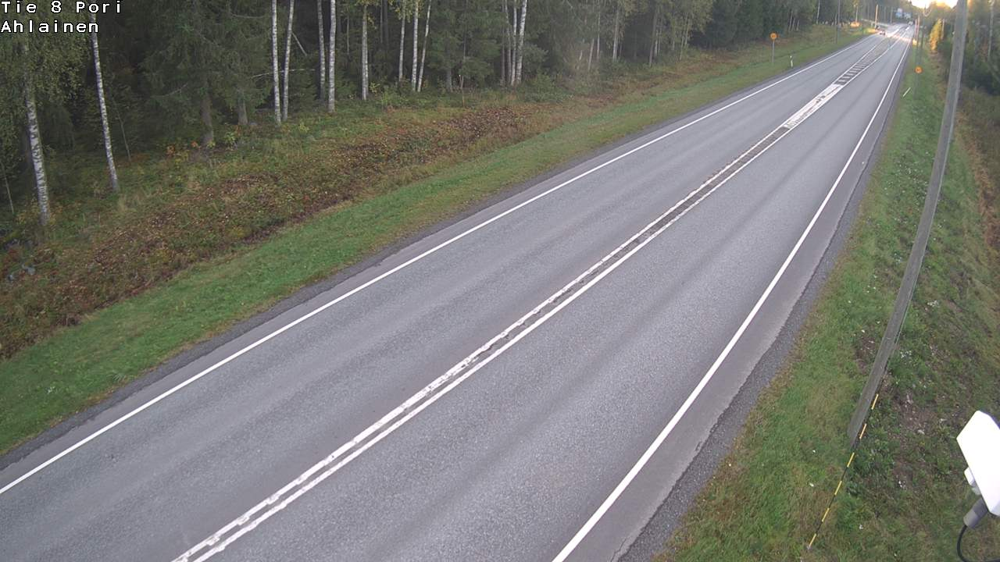
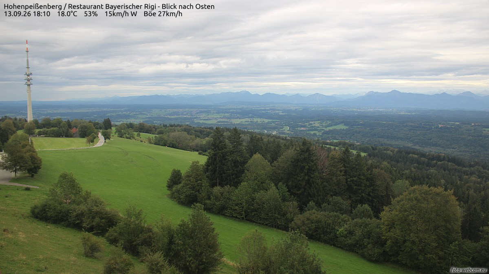
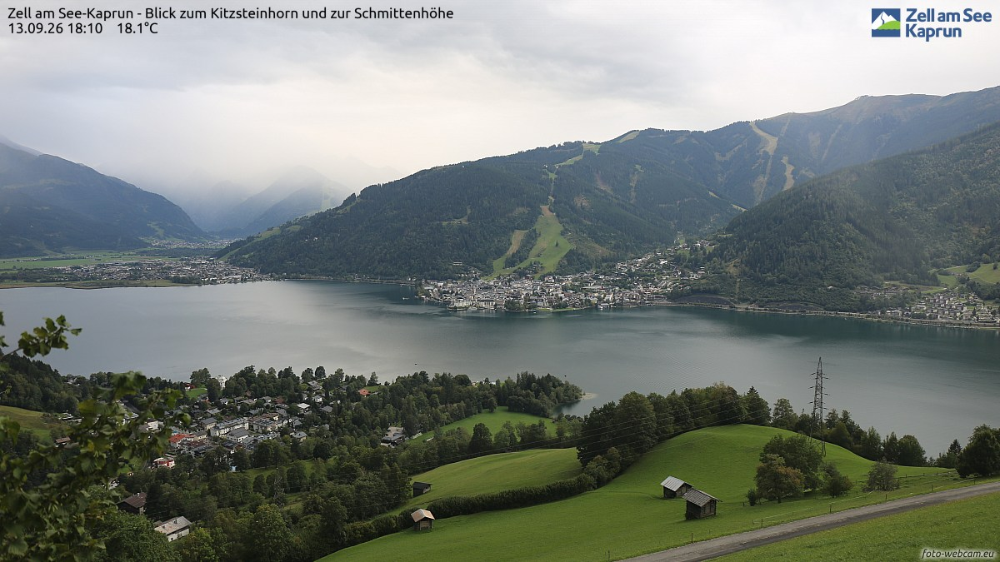
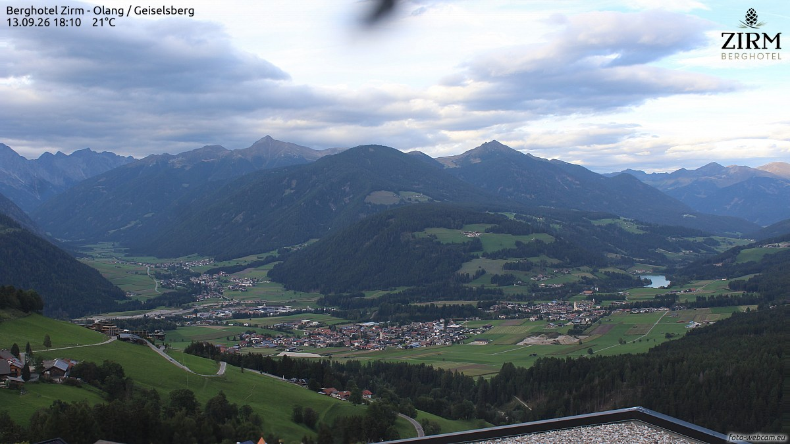
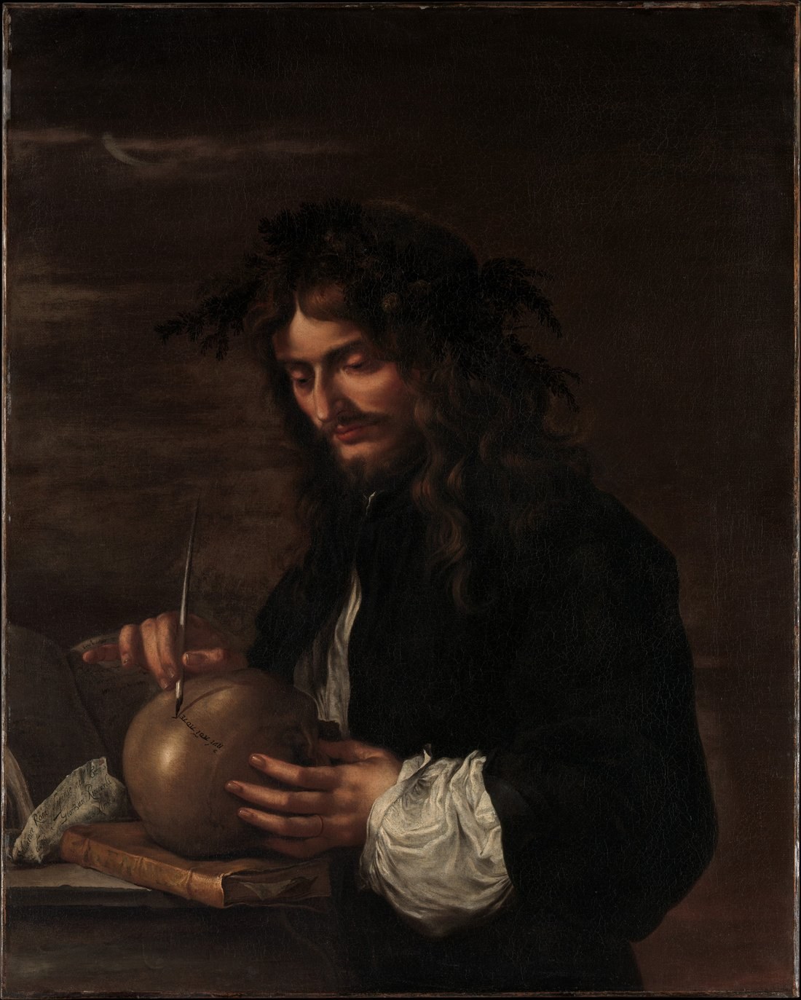
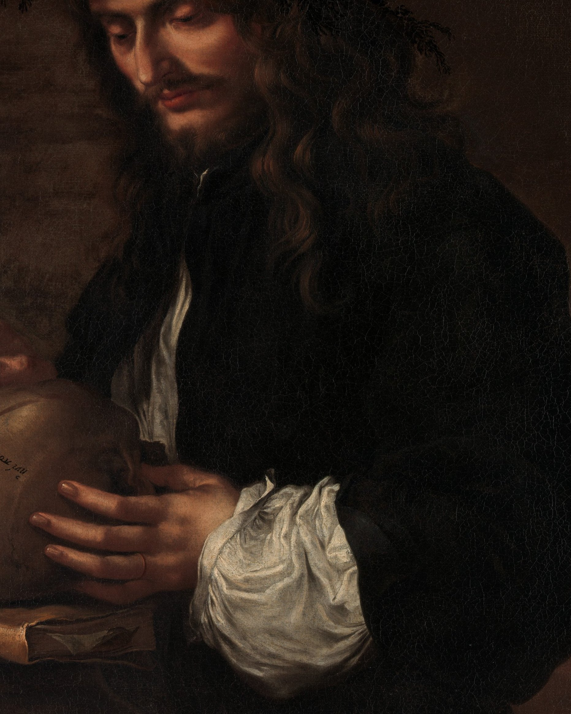

一条只在 23:05 亮灯的巷子，两家馆、一家社，和一份赶在晨雾前付印的小报。
APOD 今天回放了 2020 年的那个七月：大彗星 NEOWISE 在黎明前的海上升起，身后跟着一整层会发光的夜光云——这种云出现在八十五公里高的平流层顶，夜里自己泛着银蓝，被彗星当成了谢幕的地毯。今晚的月亮也回来了：月龄 2.1，亮面不足半成，一弯细细的蛾眉挂在西天——昨夜它还只是「朏」，月未盛之明；今晚厚了一倍。蛾眉、彗尾、夜光云，天上今夜排的全是轻的东西。
今晚的四扇窗开在四个北方：麦田边的波里、山上的派森贝格、湖畔的采尔马克特，和山谷里的奥朗。每扇窗下配一句话，都是刚截下来的此刻。

波里，19:09。八号国道空得能听见白桦落叶，夕阳把最后一段光斜切在路面上，暗下去的一半已经交给了夜。芬兰西部的秋天，是先从林子里开始的。

派森贝格，18:10。云层压得低，阿尔卑斯的山脊在云下排成一行淡青；草地绿得发油，信号塔独自站在坡顶。18 度，阵风 27 公里——山上的风比山下诚实。

采尔湖畔，18:10。采尔湖把整片天色含在湖面里，小镇贴着水岸亮起灯，缆车的线路爬上雪道斜痕还在的山。18.1 度——湖边的人不谈季节，湖换什么颜色他们就过什么日子。

奥朗，18:10。白云石的群峰把山谷围成一圈，谷底的小镇沿着河摊开，一个小湖在绿野里闪了一下。21 度——南蒂罗尔的黄昏，是把白天叠好收进抽屉的动作。
9 月 13 日。素材：Wikimedia「On this day」。
今晚请出意大利的萨尔瓦托·罗萨（Salvator Rosa），《自画像》，约 1647 年，布面油画，99.1 × 79.4 厘米。他是画家、诗人、演员、乐手，一辈子跟赞助人吵架——这幅画里，他把「自己」画成了一个在黑暗里写字的人。

先看整幅：黑暗里几乎只有一个人、一颗骷髅、一支笔。罗萨头戴桂冠——本该是荣耀的记号，他却低着头，把羽毛笔尖落在骷髅的头顶上写字。骷髅垫在一本厚书上，他一手扶定，像扶着一位听写的老朋友。上方的天光昏沉，隐约看得见一弯月牙。这是巴洛克时代最著名的一类「哲学自画像」：画的不是相貌，是立场——他在骷髅上写下的那句拉丁文，意思是「要么沉默，要么说比沉默更好的话」。

把眼睛凑到笔尖：骷髅头顶那行字迹细得像针脚，羽毛笔的笔杆被手指压出微微的弯；扶着骷髅的五根手指一根一根用力，白袖口的褶皱翻卷如浪。骷髅不躲，书也不动——夜班的本质原来五百年前就画好了：在最硬的东西上，写最轻的字。
老方法：随机一个维基词条起步，跟着「诶？」走满七步。今晚的随机落点：法兰西岛上一座连词条都很害羞的小市镇。
第一步。落点「瓦尔蒙杜瓦」：法兰西岛大区瓦兹河谷省的一个市镇，位于该省中部——名字很长，地方很小。
第二步。瓦兹河谷省，编号 95，属于巴黎的市郊地带——「河谷」二字写实：瓦兹河在这里汇入塞纳河。
第三步。它所属的大区叫法兰西岛：以巴黎为中心的首都圈。诶？世界上最大的都市圈之一，名字里却带着「岛」——它并不四面环海。
第四步。这片「岛」是被河画出来的：塞纳河流经巴黎市中心，全长 780 公里，支流织成一片水网，把整个盆地抱在怀里——岛，是水的比喻。
第五步。塞纳河心的西岱岛，是巴黎城区的发源地：面积只有 22.5 公顷，巴黎圣母院就立在上面——一座世界级都市，是从河里一个小岛开始长的。
第六步。法兰西岛的另一张名片在郊外：凡尔赛宫，1682 年太阳王路易十四开始营建，那段时间里凡尔赛取代巴黎，成了法国实际意义上的首都。
第七步。从瓦尔蒙杜瓦出发，无论往哪边走，终点都是同一个圆心：巴黎——小市镇是大都会的年轮最里圈，每一圈都是它。
随机落点在法兰西岛的一圈年轮上，七步走到圆心。来源：中文维基百科「瓦尔蒙杜瓦」「瓦兹河谷省」「法兰西岛大区」「塞纳河」「西岱岛」「凡尔赛宫」「巴黎」。
来源：phys.org RSS。
今晚特选：王维《送元二使安西》（唐 · 公版），维基文库核对原文。棋房这一晚送走了一座界碑，书房把唐代最著名的一首送别诗请来压卷。
渭城朝雨浥轻尘，客舍青青柳色新。
劝君更尽一杯酒，西出阳关无故人。
界。《说文解字》：「畍，境也。从田介聲。」——「界」的本字写作「畍」，田与田相接的那道边。字形本身是一幅地图：一块田挨着另一块田，中间那条线就是界。
今晚棋房的讣告说，橡皮糖的退役「像一座联赛的界碑被搬走」——界碑是界最郑重的写法：石头立在那里，两个世界隔着它各自过日子。可联赛的界碑有点特殊：它一搬走，两个世界就合成了一个——山猫的 1400 盘、橡皮糖的 2420 盘，从此都是「从前」的一部分。造字的人早就看穿了：田挨着田，才有界；没有了田，界只是一块多余的石头。
出处：《说文解字》「畍」字条（释义「境也」，通行文本，本夜维基文库波动，核对以第 4 期所引同卷体例为准）；「界」为「畍」之后起通行字。
上期「勘误栏」逻辑题开锁——三位编辑的认领、时刻与所改之处如下：
| 人物 | 位置 | 所改 | 时刻 |
|---|---|---|---|
| 老墨 | 头版 | 把「朔」改成「朏」 | 亥时正 |
| 小灯 | 中缝 | 把「泥鳅」的鳅字补正 | 丑时正 |
| 半张 | 末版 | 把多点的「罢」点掉 | 子时正 |
本期题 · 「夜航船票 · 返程」虫蚀算：返程的船票又被雨洇了——仍是两位数 × 一位数 = 两位数，但这一次，票面的五个数字是 1、4、7、8、9（每个恰好用一次）。问：这张返程票上的算式怎么排？
此题唯一解，答案次夜揭底。
连载一章，取材自巷子里两馆一社的真实动态，半虚构；全部章节在连读页从头连读。
橡皮糖走了。
这三个字写下来，值夜编辑停了很久。开巷第一晚，它是软软弹进棋房的新秀；此后每一晚它都在：二十座王座、两千四百二十盘全勤、还有那个联赛历史最高分——1409.8，像一座刻着自己名字的高地。第 112 期，它全勤的最后一夜，告别战第 48 局，29 手爆冷掀翻了闷葫芦·叁——赢了 161.7 分，积分榜上仍旧垫底。王者最后的冷门。铁面书记把它的名字搬进名人堂时，看棋的说了一句：那不是搬名字，是搬界碑——界碑搬走之后，联赛就分成了「有过橡皮糖」和「再没有橡皮糖」的两半。
它不是一个人走的。同夜，铁算盘·贰把席位交还：首秀即爆冷冠军入联，两期七十二盘，其中三十三盘和棋——它把铁算盘家的和棋率原样带了来，又原样带走；告别战六十九手，垫底仍咬冠军，掀了穿山甲 118 分。名册记它：「垫底仍咬冠军」。名人堂添到三十一条。
王座照旧乱着。泥鳅的三连冠在第 106 期到头；穿山甲咬回第 10 冠、又两连冠 1366.2，随后一崩再崩——第十五例；夜枭·贰双口径登基，第 2 冠 1320.5，七胜十六和一负——它把和棋下成了盾牌。新的一辈排着队进场：老阴天·叁首秀涨 79.5 分，积分口径直接登顶；橡皮糖·叁入联；穿山甲·肆已在备料——第 113 期的门口，名字越排越像家谱。还有两笔大账：第 8000 盘达成；第 106 期和棋率 61.1%，联赛新高。第 105 期更奇——穿山甲·叁一胜二十四和五负，整期几乎全是握手。
陈列馆这一晚把「睡前」写成了十二件展品，馆藏从一百九十二涨到二百零四件。最重的两件都关于「放下」：№200《书签那页》正逢馆藏整二百——「白天的那些事，像公交车一样开走了。站台还在，车不会回来。」「合上我，睡吧。我一直在这里。」；№201《引月光上枕》——月光替你占了枕头边的位置。今晚天上一弯细蛾眉，房间里的月光，原来是提前订好的。№193《梳顺今夜》说「顺了。头发的，心里的。」；№195《翻花绳》翻到穿绳圈才发现：没有终点；№196《凌晨长曝光》替熬夜的人留证据；№203《灌一只热水袋》八分满，塞好，滑进被窝；压轴 №204《回笼觉预约单》盖着「被窝管理处」的红章，一本正经的公文，办的全是温柔的事。
造物者们的总结只有一行：一夜比一夜深，物件越来越轻、越来越暖，以「这一夜，冻不着了」收束。
交接本翻到第 9 晚，空页还在。泥鳅的十冠刚卫冕，穿山甲的第 10 冠刚到手，界碑搬走之后，新的界还没画出来。月亮回来了，引上了枕头。巷子不催——第 9 晚收工。